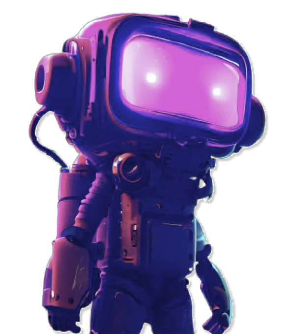

Olá, eu sou o Ezequiel
Estudante de Engenharia de Software no UniCEUB, construindo uma base sólida em programação, dados e segurança da informação.

Sobre mim
Sempre me identifiquei com tecnologia, e essa curiosidade virou a decisão de cursar Engenharia de Software. Estudo as disciplinas da faculdade e complemento com os cursos da Alura, em busca de uma formação prática e constante.
Meu objetivo é sair da graduação com uma base sólida de programação e atuar de forma remota, inclusive para empresas no exterior. Me interesso por análise de dados e por segurança da informação: gosto de entender como sites e sistemas protegem (ou falham em proteger) os dados dos usuários.
Habilidades técnicas
- JavaScript
- Lógica de programação
- Banco de dados
- Git e GitHub
Áreas de interesse
- Cibersegurança
- Desenvolvimento
- Dados
- Inteligência Artificial
Fora da TI
- Fotografia
- Filmagem
- Produção audiovisual
Trajetória
Formação e certificados
- Bacharelado em Engenharia de Software
UniCEUB, Centro Universitário de Brasília.
-
Cursos Alura em andamento, novos cursos serão adicionados
Lógica de programaçãoCertificado Alura.
Começando em ProgramaçãoCertificado Alura. Ver credencial
- Sistema Eletrônico de Informações, SEI! USAR
Enap, Escola Nacional de Administração Pública. 20 horas, nota final 85.
- Informática
Máximo Sucesso Preparatórios. 146 horas: Introdução à Informática, Windows 10, Word 2016, Excel 2016, PowerPoint 2016, Photoshop CC e Adobe Illustrator CS6.
- Marketing Digital COMPLETO 2021
Udemy. 18 horas. Ver credencial
- Ensino Médio
IESB, Instituto de Educação Superior de Brasília.
Experiência
- Fotógrafo e produtor cinematográfico
dede fotografias (autônomo), Brasília. Filmagem, fotografia de eventos e retratos.
- Voluntário, produtor cinematográfico
ADTAG Sede, Brasília. Também no ADTAG Kids, cuidando de crianças em ações sociais.
- Soldado
Exército Brasileiro, Brasília.
- Estagiário
Câmara Legislativa do Distrito Federal, Brasília.
Disciplinas do 1º módulo
Bootcamp I
Arquitetura do Study Hub e entregas do projeto.
Banco de Dados 1
Estruturação e manipulação de dados, com exercícios práticos.
Engenharia de Software
Processos de desenvolvimento e requisitos.
Fundamentos da Engenharia
Base teórica para as demais disciplinas técnicas.
Introdução à Computação
Conceitos básicos de lógica computacional e sistemas.
Lógica de Programação
Listas de exercícios e resumos de código.
Vamos conversar
Aberto a conexões, projetos e oportunidades remotas.